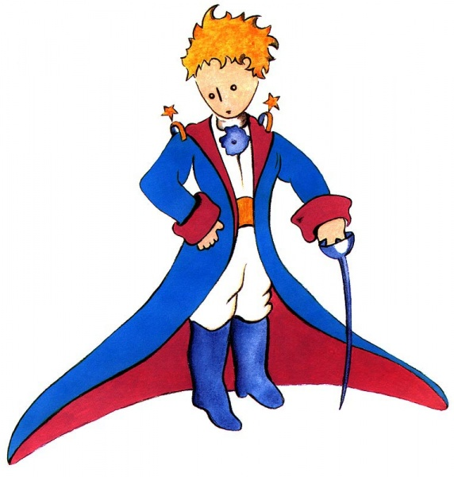
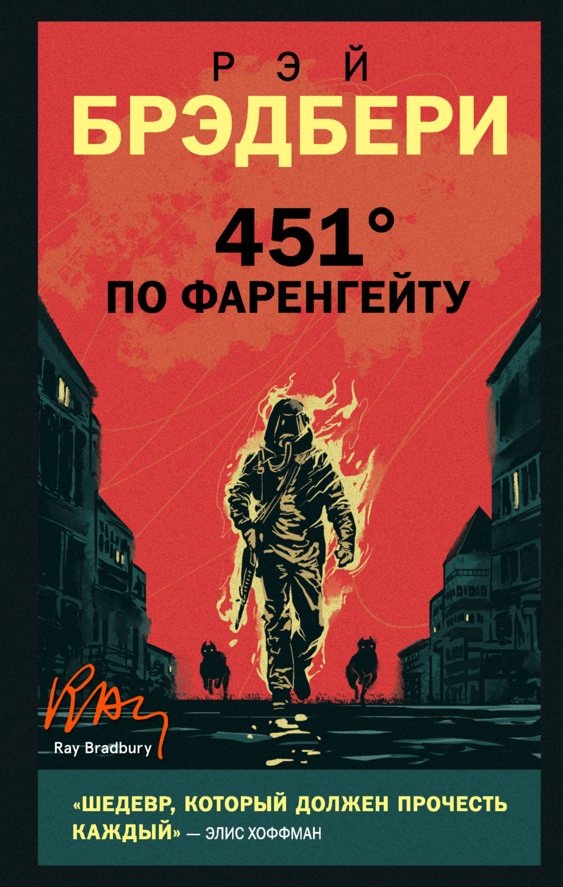
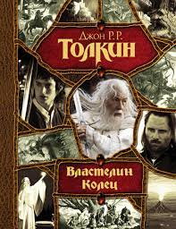

BooksТоп 3 Популярных книг XX векa1)«Ма́ленький принц»«Ма́ленький принц» (фр. Le Petit Prince) — аллегорическая повесть-сказка, наиболее известное произведение Антуана де Сент-Экзюпери. Сказка рассказывает о Маленьком принце, который посещает различные планеты в космосе, включая Землю. Книга обращается к темам одиночества, дружбы, любви и утраты. Несмотря на стиль детской книги, её герой рассуждает о жизни и человеческой природе. Впервые опубликована 6 апреля 1943 года в Нью-Йорке. Было продано более 140 миллионов экземпляров по всему миру, что поставило её в ряд самых продаваемых книг. 2) «451 градус по Фаренгейту»«451 градус по Фаренгейту» (англ. Fahrenheit 451) — научно-фантастический роман-антиутопия Рэя Брэдбери, изданный в 1953 году. Роман описывает американское общество близкого будущего, в котором книги находятся под запретом; «пожарные»[1], к числу которых принадлежит и главный герой Гай Монтэг, сжигают любые найденные книги. 3) «Властели́н коле́ц»«Властели́н коле́ц» (англ. The Lord of the Rings) — роман-эпопея английского писателя Дж. Р. Р. Толкина, одно из самых известных произведений жанра фэнтези. «Властелин колец» был написан как единая книга, но из-за объёма при первом издании его разделили на три части — «Братство Кольца», «Две крепости» и «Возвращение короля». В виде трилогии он публикуется и по сей день, хотя часто в едином томе. Роман считается первым произведением жанра эпическое фэнтези, а также его классикой. |